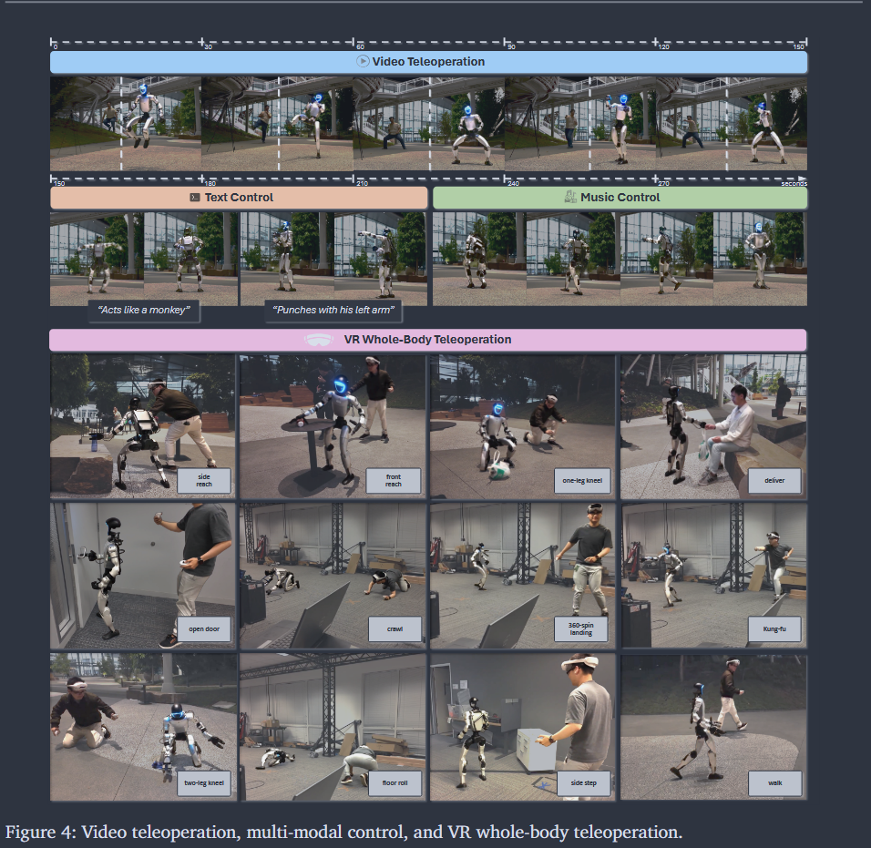
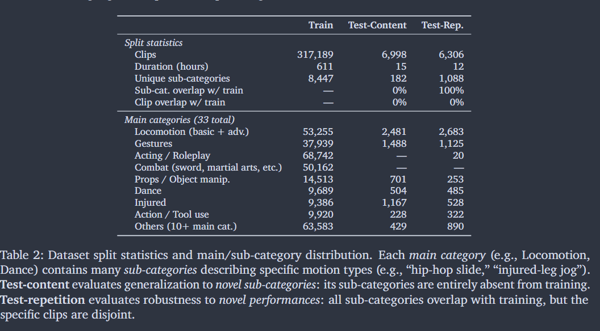
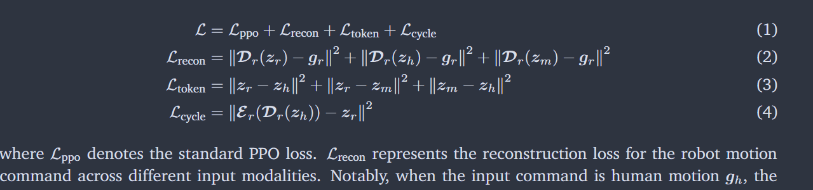
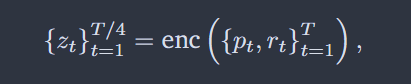
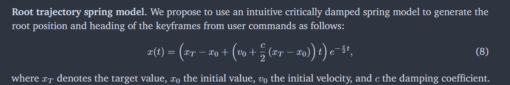
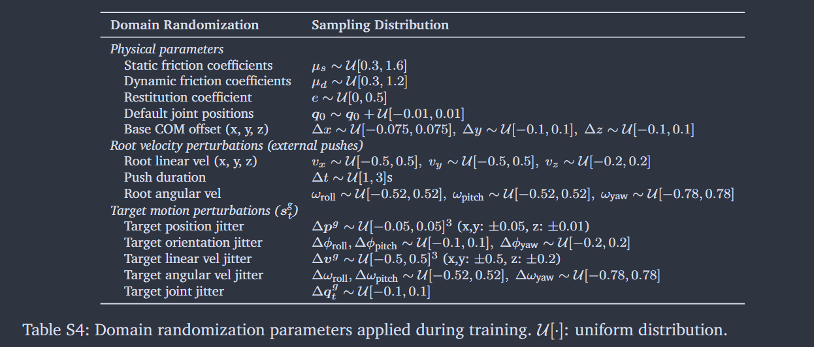

Comment: Project page: https://nvlabs.github.io/SONIC/ Scaling model capacity, data and compute
Comment: Project page: https://nvlabs.github.io/SONIC/ Scaling model capacity, data and compute
GEAR-SONIC: Motion Tracking, a real-time kinematic planner bridging motion tracking to tasks, a unified token space supporting VR teleoperation and VLA model with a single policy
RESULTS:

- Tracking
Scaling up
2. Interactive Motion Control
“SONIC supports a variety of applications, including: (1) navigation control with arbitrary velocity, direction, and style commands; (2) interactive entertainment tasks such as boxing; (3) locomotion skills such as squatting, crawling, kneeling, etc., which are useful for downstream applications like teleoperation, because both our kinematic planner and tracking policy are trained on the same large-scale dataset.” (Luo 等, 2026, p. 6)

3. Video Teleoperation and Multi-modal Control

4. VR based Teleoperation
“(1) Whole-body teleoperation uses a PICO headset, ankle trackers, and handheld controllers (Zhao et al., 2025) to stream full-body SMPL (Loper et al., 2015) poses, encoded via the human motion encoder Eh. (2) 3-point teleoperation uses only the headset and controllers (no ankle trackers), outputting three upper-body SE(3) poses (head, both wrists), finger joints, waist height, and a navigation command; the kinematic planner generates the lower body.” (Luo 等, 2026, p. 9)
5. Foundation-Model-Driven Loco-Manipulation - Gr00t N1.5
VLA predicts 78-dimension(64 universal motion token + 14 hand joints)
MATERIALS and METHODS - Isaac Lab
1.Humanoid Motion Dataset

700 hours of human motion
public as BONES-SEED dataset in Unitree G1 Formats
2. Universal Humanoid Motion Tracking
Formulation: MDP + PPO(Training)

States - Proprioceptive sensing + Motion command
Actions: policy outputs target joint positions as actions (PD controller)
Rewards: rt = R(sp t , sg t ) + P(sp t , at)
Encoders: Human motion and robot demonstrations into the same latent representation
Quantizer: latent representations into universal token z
Decoders : Dc + Dr
*SONIC 中的 shared latent representation 与 BFM-Zero 的 latent representation 在形式上相似，都是作为 policy 的条件变量，用来调制同一个 humanoid controller 的行为输出。但二者的语义和训练目标不同。BFM-Zero 的 latent 是由 Forward-Backward framework 学到的 task-centric behavior embedding，它可以将 reward、goal 和 motion 映射到共同空间，并通过 r_z(s)=φ(s)^Tz 定义任务奖励；而 SONIC 的 shared latent 更偏 motion-centric，它主要用于统一 robot motion、human motion 与 hybrid motion，使不同来源、不同骨架或不同身体部分的参考运动可以被同一个 whole-body policy 无缝处理。因此，BFM-Zero 关注的是“如何用 latent 表示任务和行为目标”，SONIC 关注的是“如何用 latent 表示和融合不同类型的运动输入。
Training:

Generative Kinematic Motion Planner - large-scale latent generative model
1.Motion Representation
2.Generative Neural Backbone in Latent Space


3. Root Trajectory Spring Model

4. Keyframe Module and Application Integration
4. Multi-modal Motion Generation - GEM
Validations:

Rewards:

Domain Randomization:
